Voir exemple : Les Bassins de rétention pluviale
L'usage premier du bassin de retenue est la protection contre les inondations. La mise en service de cet équipement d'assainissement s'est fréquemment accompagnée d'un dépassement de cet objectif initial, cependant il faut veiller à ce que ces différents types d'usage possibles ne prennent pas le pas sur la fonction première du bassin de retenue.
Selon les usages possibles, il y a des degrés de compatibilité différents. Pour illustrer ce point, nous analyserons quelques usages de ce point de vue. Ils ont été choisis parce qu'ils apparaissent le plus fréquemment, mais ils sont loin de représenter l'ensemble des éventualités possibles.
L'objectif premier des bassins de retenue est de lutter contre les inondations. Ceci peut également s'accompagner par une dépollution des eaux, dans la mesure du possible. Celle-ci sera effectuée principalement grâce à la décantation des matières solides transportées dans le flot d'orage. L'efficacité de ce pré-traitement est étroitement liée à la forme géométrique de l'ouvrage.
L'usage réserve écologique et l'usage hydraulique s'opposent très largement. En effet, un équilibre écologique à long terme ne peut être atteint en raison des àcoups hydrauliques et des pollutions chroniques.
Les bassins de retenue peuvent aussi contribuer à la création d'un paysage urbain plus agréable et permettre des activités de loisir comme la pêche, le nautisme, le modélisme, la promenade. Cependant en aucun cas la baignade ne saurait être autorisée. Le maintien de la qualité de l'eau est primordial, cela peut donc s'avérer contraignant.
D'autres usages peuvent être envisagés pour les bassins de retenue. Parmi ceux qui ont pu être réalisés ces dernières années, citons : la recharge de la nappe phréatique ou la réserve d'incendie. De tels usages dépendent de chaque cas particulier rencontré. Il en est de même pour l'analyse de leur compatibilité.
Les bassins à ciel ouvert se subdivisent eux-mêmes en trois sous classes :
les bassins en eau,
les zones humides,
et les bassins secs.
Les bassins en eau contiennent de l'eau en permanence. Celle-ci, au moins dans certains endroits, a une profondeur suffisante pour éviter l'envahissement par des plantes aquatiques à partir du fond. L'alimentation de temps sec provient généralement de la nappe phréatique.
Les bassins de type zones humides, beaucoup moins fréquents, et qui sont généralement des zones inondables, peuvent être considérés comme une forme particulière de bassin en eau. C'est un milieu fragile et la probabilité d'une pollution accidentelle doit y être très faible.
Les bassins secs, comme leur nom l'indique, ne contiennent pas d'eau en dehors des périodes pluvieuses. Tout leur volume est donc consacré au stockage.
Les bassins enterrés n'occupent pas de surface au sol et n'entrent pas en compétition avec d'autres équipements pour l'usage du foncier.
Ils nécessitent en général des travaux de génie civil importants. Étant construits à une profondeur non négligeable, il faut la plupart du temps des pompes pour vider l'eau stockée.
Il est nécessaire de connaître la courbe Intensité - Durée - Fréquence (IDF), notée i(t,T). En effet, la courbe des hauteurs d'eau H(t,T), se déduit de cette courbe IDF :
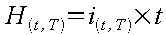
d'où en mm (avec b négatif) :
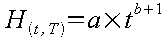
Si on désigne par Qs le débit aval admissible, le débit aval admissible spécifique s'exprime par la relation suivante :
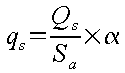
|
qs |
en mm/h |
|
Qs |
en l/s |
|
Sa |
la surface active (surface x coefficient d'apport du BV) en ha |
|
α |
coefficient d'unité égal à 0,36 |
Ainsi la hauteur d'eau évacuée par le système de vidange du bassin s'écrit :
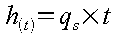
et la hauteur d'eau à stocker :
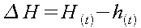
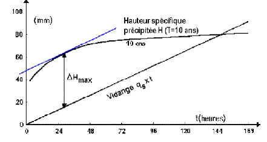
A partir de la hauteur de pluie à stoker ΔHmax, on peut calculer le volume de stockage nécessaire :
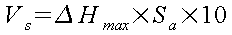
|
Vs |
en m3 |
|
ΔHmax |
en mm |
|
Sa |
en ha |
Il est possible de résoudre graphiquement le problème. Il suffit de tracer, comme sur la figure précédente, la tangente à la courbe H parallèle à la droite qs. On peut alors lire simplement la hauteur ΔHmax.
Le calcul numérique du volume de stockage passe par la recherche du maximum de la fonction H(t)-qs(t) x t. Il faut donc chercher le temps tmax où la dérivée s'annule. On pourra alors en déduire la valeur de ΔHmax, puis finalement le volume de stockage.
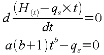
D'où tmax en heures :
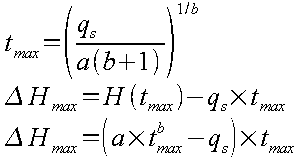
D'où finalement Vs en m3 :
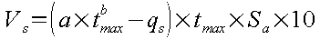
Ils résultent des analyses statistiques des enregistrements pluviométriques. Ces analyses conduisent à des familles de paramètres variables d'une part suivant la période de retour, mais d'autre part également suivant la durée des événements pluvieux. Il est important de retenir pour le calcul la famille de paramètres adaptée, faute de quoi des dérives importantes peuvent être relevées au niveau des résultats, c'est à dire du volume de stockage. L'exemple qui suit, illustre la sensibilité liée aux choix des paramètres a et b : celui-ci est donc essentiel dans la démarche de dimensionnement.
![[Important]](chmicons/important.png) | Important |
|---|---|
Pour les paramètres a et b, il importe également d'être attentif aux unités utilisées (précisées sur les tableau fournis par Météo France). |
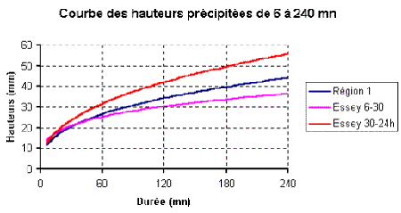

L'application de la méthode à un bassin versant d'environ 56 hectares, présentant un coefficient de ruissellement de 53 % et un débit aval admissible de 100 l/s, conduit ainsi aux résultats suivants :
|
Choix des paramètres de Montana |
Volume estimé du stockage |
|---|---|
|
Région 1 – 10 ans a = 5,9 – b = -0,59 |
28 600 m3 |
|
Nancy-Essey – 10 ans – Averses de 6 à 30mm a = 5,95 – b = -0,634 |
16 600 m3 |
|
Nancy-Essey – 10 ans – Averses de 6 à 30mm a = 8,543 – b = -0,735 |
10 200 m3 |
On constate que les résultats vont quasiment du simple au triple. Ceci s'explique par le fait que le domaine de validité des paramètres a et b n'est pas respecté.
Pour les coefficients de la région 1, il n'existe pas explicitement de domaine de validité ; leur utilisation tend de toutes façons à disparaître. L'écart constaté par rapport aux deux autres valeurs résulte principalement de l'approximation liée à la séparation de la France en trois secteurs principaux, avec des couples de paramètres a et b identiques sur l'ensemble de chacun des secteurs. Il est conseillé d'utiliser des données les plus proches possibles du cas réel à étudier.
Pour le calcul du volume de stockage avec les coefficients correspondants aux averses de 6 à 30 minutes, le domaine de validité de ces coefficients n'est pas respecté. En effet, le temps tmax calculé est de plus de 28 heures et donc largement supérieur au domaine d'exploitation des averses.
En revanche pour les coefficients correspondants aux averses de 30 minutes à 24 heures, le temps tmax est environ de 11 heures : il est donc compris dans l'intervalle de validité du couple a et b.
Ce mode de calcul est disponible dans Hydrouti, dès lors qu'on utilise l'option « Sélection d'un bassin versant ». On bascule alors vers le module « bassin versant », où on peut calculer l'hydrogramme résultant à l'exutoire tel que cela est expliqué dans l'aide correspondant à ce module.
Le volume de stockage se déduit aisément puisqu'il résulte de l'intégration sur le temps du débit à l'exutoire moins le débit aval admissible. Autrement dit, sur le graphique disponible pour le calcul par la méthode de l'hydrogramme, ce volume de stockage est représenté par l'aire verte.
| Note | |
|---|---|
La pluie donnant le maximum de volume de stockage n'est que très rarement celle qui donne le débit de pointe à l'exutoire du bassin versant, elle est en fait liée au débit de vidange de l'ouvrage de rétention. Le calcul du volume par la méthode de l'hydrogramme nécessite d'effectuer des tests avec des pluies construites avec les mêmes hypothèses de période de retour mais de durée différentes allant de 30 mn à 4h,15h, 24 h ou de plusieurs jours. |